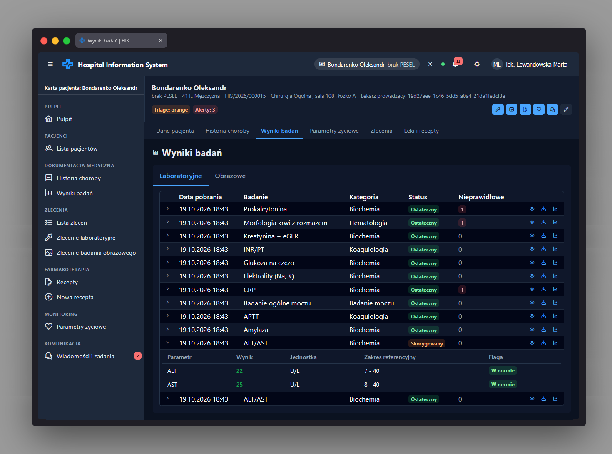

Wyniki badań app-patient-results-page
Ścieżka
Podstrona karty pacjenta:
/patients/:patientId/results, zagnieżdżona jako
dziecko powłoki karty pacjenta
/patients/:patientId (PatientChartPage,
dane pacjenta wczytuje patientResolver). Dostęp
chroniony przez
permissionGuard(PERMISSIONS.LAB_RESULT_READ,
PERMISSIONS.IMAGING_RESULT_READ)
- strona jest widoczna, gdy rola ma przynajmniej jedno z tych
uprawnień.
Przeznaczenie
Prezentuje wyniki badań pacjenta w dwóch zakładkach:
Laboratoryjne i Obrazowe.
Aktywna zakładka jest odzwierciedlona w parametrze zapytania
tab adresu URL (domyślnie lab), dzięki
czemu link do konkretnej zakładki można zapisać lub przekazać
dalej.
Dane wejściowe
-
Identyfikator pacjenta (
patientId) z adresu URL - na jego podstawie wczytywane są wyniki laboratoryjne (LabResultService.getResults()) i obrazowe (ImagingResultService.getResults()). - Wybór zakładki: Laboratoryjne lub Obrazowe.
- Kliknięcie przycisku w wierszu wyniku: podgląd szczegółów, pobranie raportu, a dla wyników laboratoryjnych także porównanie parametru w czasie.
Akcje
-
Zakładka Laboratoryjne - tabela wyników z
kolumnami: data pobrania, badanie, kategoria, status
(
app-status-tag, rodzajresultStatus) oraz liczba nieprawidłowych obserwacji (znacznikp-tagz liczbą obserwacji o fladze innej niżN, albo "0" gdy wszystkie w normie). Rozwinięcie wiersza pokazuje szczegółowe obserwacje (app-lab-result-observations). Gdy brak wyników, wyświetlany jest stan pusty "Brak wyników laboratoryjnych". -
Przyciski w wierszu laboratoryjnym: "Szczegóły" (przejście do
/patients/:patientId/results/lab/:id), "Pobierz raport" (ReportDownloadService.downloadLabReport()+ toast "Raport pobrany") oraz "Porównaj w czasie" (otwiera dialog porównania trendu z domyślnie wybranym pierwszym dostępnym parametrem - parametr można potem zmienić w dialogu). - Zakładka Obrazowe - tabela wyników z kolumnami: data wykonania, modalność, badanie, okolica ciała, status oraz znacznik "Krytyczny" (gdy wynik oznaczony jako krytyczny) lub "-" w przeciwnym razie. Gdy brak wyników, wyświetlany jest stan pusty "Brak wyników obrazowych".
-
Przyciski w wierszu obrazowym: "Podgląd" (przejście do
/patients/:patientId/results/imaging/:id) oraz "Pobierz raport" (ReportDownloadService.downloadImagingReport()z opisem, wnioskiem i datami badania + toast "Raport pobrany"). -
Przycisk "Porównaj w czasie" wczytuje listę parametrów
podlegających trendowaniu
(
LabResultService.getTrendableAnalytes()) i otwieraapp-result-compare-dialogz pierwszym parametrem z listy jako domyślnym; w razie błędu wczytywania wyświetla toast błędu i nie otwiera dialogu. -
Zmiana zakładki aktualizuje parametr
tabw adresie URL.
Zrzut ekranu
